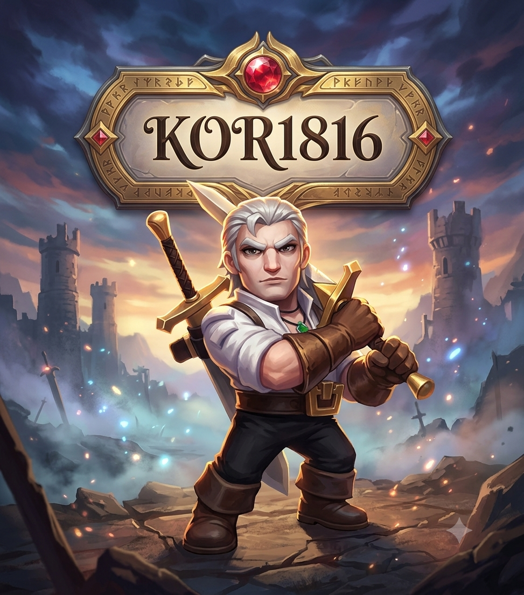
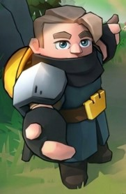

WELCOME TO OUR KINGDOM
당신의 여정을
선택하세요
Kingdom 1816 · 건들면 문다! · 곰친자들의 모임!!

ALLIANCE MEMBERS
1816
연맹원 전용 공간
프로필 · 전투력 분석 · 연맹 활동입장하기 ↗
MIGRATION COMMUNITY
이민자
새로운 인연을 찾는 공간
전투력 프로필 · 자기소개 · 이민자 명부입장하기 ↗안전한 공간을 위해 각 공간은 별도의 로그인과 권한으로 운영됩니다.
ALLIANCE MEMBERS
1816 로그인
게임 계정 인증을 통해 본인 프로필을 연결하는 공간입니다.
게임 ID 확인 후 입장 ↗화면 시안입니다. 실제 인증은 API와 본인 확인 방식을 검증한 뒤 연결합니다.
MIGRATION COMMUNITY
이민자 로그인
이민자 프로필과 자기소개를 관리하는 전용 공간입니다.
이민자 명부 입장 ↗이민자 전용 화면입니다. 실제 인증은 연동 가능 여부 확인 후 구현합니다.